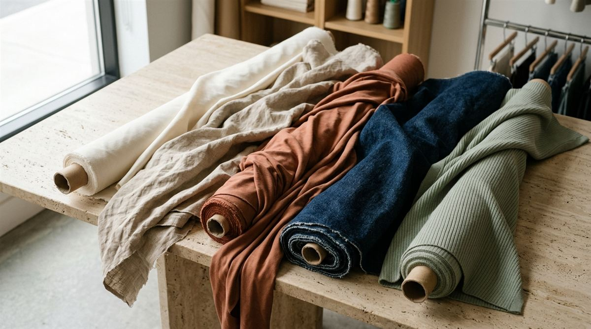

Déjala en reposo unos segundos para ver qué hace sola.
Cómo se anima

Gamarra, Lima
Tejidos nobles para confección
Algodón Pima, lino y mezclas para tu próximo proyecto.
Algodón Pima
Lino natural
Punto canalé